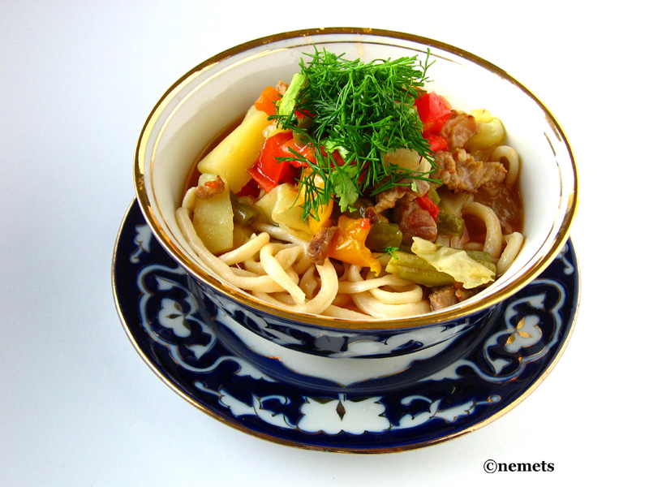

Main page
Laghman recepti

These handmade noodles in a flavoursome lamb and mushroom stew. A specialty in China, this dish takes a little more effort, but it's well worth it
Ingredients:
- 2 tbsp vegetable oil
- 1 tsp cornflour
- 150g lamb leg
- ½ onion
- 1 garlic clove
- 2 tomatoes
- 30g black ear mushrooms
- 1 red pepper
- 1 tbsp ground cumin
- 1 tbsp tomato purée
- 250g plain flour
- vegetable oil
Steps
- For the noodles, use a spoon to combine the flour with 130ml water and a pinch of salt in a mixing bowl until it forms a rough dough. Knead for 5-10 mins until smooth. Cover and leave to rest for 30 mins.
- Meanwhile, combine the 1 tsp vegetable oil and the cornflour in a large bowl with a pinch of salt and ¼ tsp freshly ground black pepper. Tip in the lamb and massage into the meat. Leave to marinate while you make the noodles.
- Roll the noodle dough into a flat, round shape, then cut into 1cm strips. Brush vegetable oil over each strip before shaping into a 10cm-long rope; you can do this by rolling it with your fingers against the worktop, moving it outwards to help it stretch. Put each rope on an oiled plate so they spiral out from the centre, with one end touching the other. Leave to rest for another 20 mins.
- Bring a pan of water to the boil over a medium-high heat. Taking one rope of dough at a time, pull from each end until it stretches to a 0.3cm-thin string, about 35cm in length. Add to the boiling water, then repeat with the rest of the dough. Drain the noodles, reserving the water, and set both aside.
- Heat a large pan over a medium heat and cook the lamb for around 5-6 mins until all the pieces are brown. Remove from the pan and set aside.
- Using the same pan, heat the remaining 2 tbsp oil, add the onion and cook for around 2 mins to soften slightly before adding the garlic and cooking for another minute. Add the tomatoes, mushrooms, red pepper, cumin, tomato purée and a good pinch of salt. Cook for for 5-8 mins until the red peppers have softened.
- Add 4 tbsp water reserved from cooking the noodles, mix well and bring to the boil. Cook for 30 seconds-1 min until thickened. Remove from the heat. Divide the noodles between bowls, then pour the lamb stew on top.